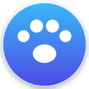

Live scope data from HackerOne, Bugcrowd, Intigriti and YesWeHack, so you know what's in scope before you touch anything.
Synced from the public, community-maintained bounty-targets-data project, the actual in-scope/out-of-scope lists from HackerOne, Bugcrowd, Intigriti and YesWeHack. Runs fully client-side, cached on your device.
Every program currently in the local scope database. Search by name, filter by platform, or narrow to bounty-paying programs only.
New programs and newly added scope, most recent first. A "tracked" tag marks domains you're already tracking.